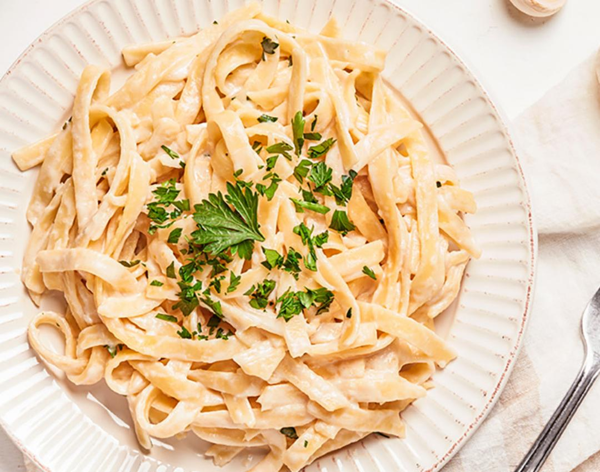

Fetucchini Alfredo
Ingredientes
- 400 g de fettuccine
- 1 taza (240 ml) de crema de leche (nata)
- 1/2 taza (115 g) de mantequilla
- 1 taza (100 g) de queso parmesano rallado
- 2 dientes de ajo, picados (opcional)
- Sal y pimienta negra al gusto
- Perejil fresco picado para decorar (opcional)
Instrucciones
- Cocinar la pasta
- En una olla grande, hierve agua con sal. Cocina el fettuccine según las instrucciones del paquete hasta que esté al dente. Reserva una taza del agua de cocción de la pasta antes de escurrirla.
- Preparar la salsa Alfredo
- En una sartén grande, derrite la mantequilla a fuego medio. Si usas ajo, agrégalo en este momento y sofríelo por unos minutos hasta que esté fragante.
- Añade la crema de leche a la sartén y mezcla bien con la mantequilla derretida. Cocina a fuego lento durante unos 5 minutos, revolviendo constantemente, hasta que la mezcla comience a espesar.
- Retira la sartén del fuego y agrega el queso parmesano rallado. Mezcla bien hasta que el queso se derrita completamente y la salsa esté suave y cremosa.
- Si la salsa está demasiado espesa, puedes añadir un poco del agua de cocción de la pasta que reservaste, poco a poco, hasta alcanzar la consistencia deseada.
- Sazona con sal y pimienta negra al gusto.
- Mezclar la pasata con la salsa
- Agrega el fettuccine cocido a la sartén con la salsa Alfredo. Mezcla bien hasta que toda la pasta esté cubierta con la salsa.
- Servir
- Sirve el fettuccine Alfredo caliente, espolvoreado con un poco más de queso parmesano rallado y perejil fresco picado si lo deseas.
¡Disfruta de tu delicioso Fettuccine Alfredo!
